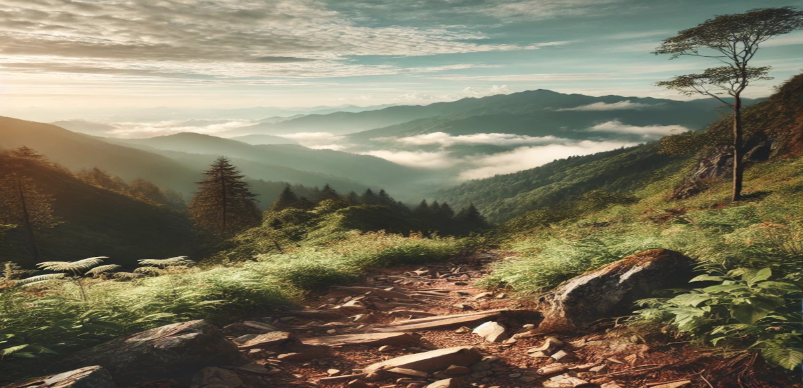
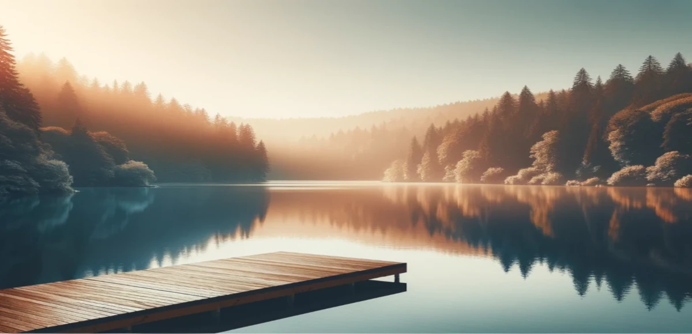
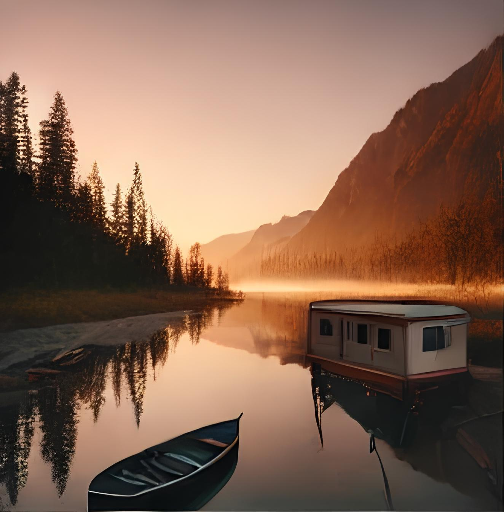
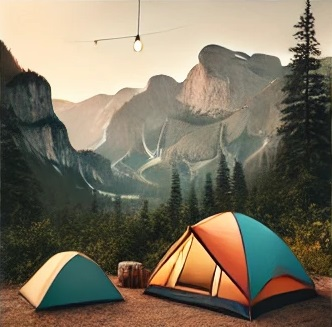
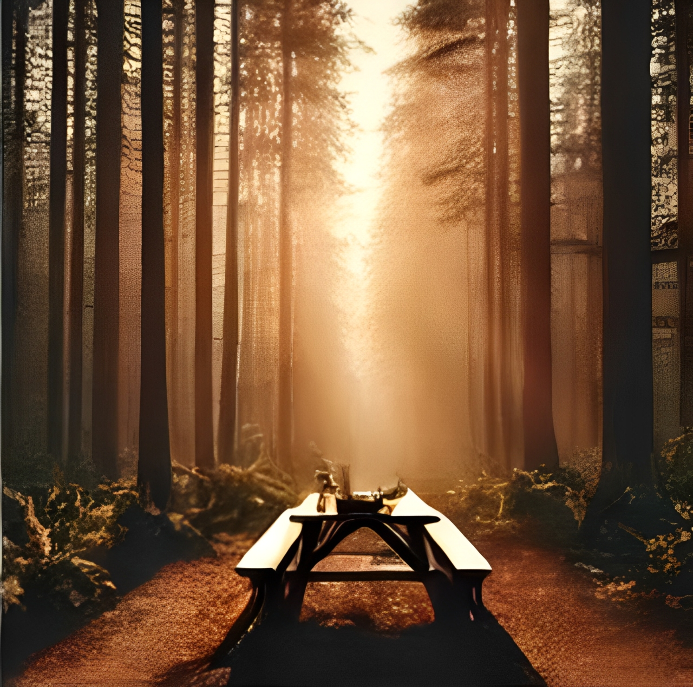

Desconecte-se do dia a dia e mergulhe em experiências de paz e reconexão com a natureza
Roteiros de Trilhas e Caminhadas
Para aqueles que buscam explorar os segredos mais bem guardados da natureza, os roteiros de trilhas e caminhadas são a chave. Se você é iniciante ou já tem experiência, nossas sugestões incluem desde trilhas fáceis em parques urbanos até jornadas mais exigentes em montanhas isoladas. Além de dados práticos como mapas e pontos de interesse, damos ênfase à experiência sensorial de cada trilha – os sons, as vistas e a conexão com o ambiente ao redor. Aqui, cada passo é um convite para desacelerar e redescobrir a tranquilidade que a natureza oferece.

Dicas de Acampamento Sustentável
Acampar é uma das maneiras mais puras de vivenciar a natureza, e praticá-lo de forma sustentável é fundamental. Nossas dicas incluem escolhas inteligentes de equipamentos, como barracas eco-friendly e utensílios reutilizáveis, além de práticas como o “deixe no lugar o que você encontrou”. Ensinamos como montar acampamentos que respeitam o ecossistema local, preservando a fauna e flora, e como evitar o desperdício de água e alimentos. Ao adotar essas práticas, você contribui para que futuras gerações também possam desfrutar de ambientes naturais intocados.
Exploração de Parques Nacionais
Os parques nacionais são refúgios de biodiversidade e cultura, e cada um oferece uma experiência única. Explore as trilhas mais emblemáticas de parques como o Yosemite ou o Parque Nacional de Torres del Paine, ou descubra os menos conhecidos, onde a natureza ainda se mantém preservada em sua essência. Oferecemos dicas sobre como planejar sua visita, incluindo informações sobre os melhores períodos do ano, o que levar em termos de equipamentos e como participar de atividades como observação de animais selvagens, camping selvagem ou fotografias incríveis. Esses parques são o cenário perfeito para encontrar paz e reconectar-se com o planeta.

Galeria de Fotos com paisagens Naturais
A beleza da natureza muitas vezes não pode ser totalmente capturada em palavras, por isso, criamos uma galeria visual de tirar o fôlego. Cada foto é escolhida para transportar você para a cena – seja a calmaria de uma praia deserta, a grandiosidade das montanhas ou o mistério de uma floresta densa. Aqui, as imagens não são apenas belas, mas também despertam uma sensação de calma e contemplação, refletindo o espírito do que é viver mais leve e em sintonia com o meio ambiente. Se você não pode estar lá fisicamente, deixe-se envolver pelas cores e formas que a natureza nos oferece.



Lugares Recomendados
Parque Nacional de Banff, Canadá – Famoso por suas montanhas majestosas, lagos cristalinos e paisagens alpinas de tirar o fôlego.
Ilhas Maldivas – Conhecidas por suas águas turquesas, praias de areia branca e recifes de corais vibrantes, um paraíso tropical.
Grand Canyon, EUA – Uma imensa formação rochosa com cânions profundos e paisagens deslumbrantes que variam de acordo com a luz do dia.
Amazônia, Brasil – A maior floresta tropical do mundo, com uma biodiversidade única e rios imponentes.
Monte Fuji, Japão – Uma montanha icônica, cercada por um cenário natural deslumbrante, especialmente durante a temporada de flores de cerejeira.
Parque Nacional Torres del Paine, Chile – Com suas impressionantes montanhas, glaciares e lagos azuis, é um destino imperdível para os amantes de trilhas e fotografia.
Ilhas Galápagos, Equador – Famosas por sua fauna única e ecossistemas intocados, onde se pode observar animais selvagens em seu habitat natural.
Parque Nacional Kruger, África do Sul – Um dos melhores locais para safáris, oferecendo a chance de ver os "Cinco Grandes" (leão, elefante, búfalo, leopardo e rinoceronte) no seu habitat natural.
Aurora Boreal, Noruega ou Islândia – Um espetáculo natural impressionante de luzes coloridas no céu, visível em locais próximos ao Ártico.
Relatos de Viajantes e Suas Experiências
Além de dicas e roteiros, nada melhor do que histórias de quem já percorreu o caminho. Os relatos dos viajantes vão além de simples descrições de lugares – são histórias pessoais de autodescoberta, desafios superados e momentos de profunda conexão com a natureza. Através dessas narrativas, é possível entender o impacto que uma viagem pode ter no equilíbrio mental e emocional, inspirando novos viajantes a saírem em busca de experiências transformadoras. Se você é um aventureiro que já se perdeu na imensidão de um campo aberto ou em um tranquilo refúgio nas montanhas, este espaço é dedicado a compartilhar sua jornada com outros que buscam a mesma paz.